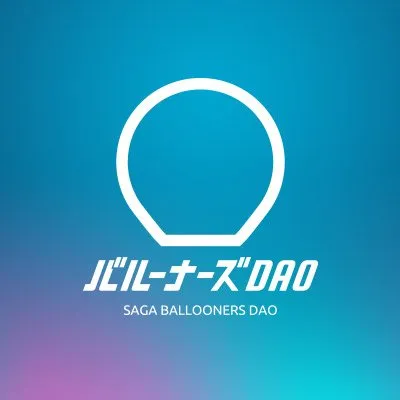

トップ / COMMUNITY
スポーツの力で地域課題に挑む。ファンコミュニティとラジオで、人と人をつなぐ。
BALLOONERS DAO

B.LEAGUE「佐賀バルーナーズ」を応援するファンコミュニティで、モデレーターとしてコミュニティ運営を担当。運営への貢献により感謝状を受領。
えびすFMで放送中の、バルーナーズDAOによるラジオ番組でパーソナリティを担当(2026年5月〜)。リスナーからのお便りやリクエスト曲を紹介しながら、バスケと地域の話題を届けています。
アプリ「FM++(エフエムプラプラ)」で聴取できます。
8つのテーマ一覧へ戻る